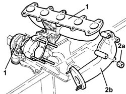
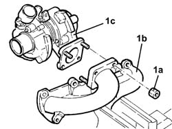

1064A26 Variable geometry TURBOCHARGER ASSEMBLY - DISMANTLING AND REASSEMBLY
- Path
- Procedures > 10 ENGINE > 1064 ENGINE SUPERCHARGING SYSTEM > 1064A TURBOCHARGER ASSEMBLY > 1064A26 Variable geometry TURBOCHARGER ASSEMBLY - DISMANTLING AND REASSEMBLY
- Kind
- repair procedure (removal / refitting; the operation number is the code)
- Applies to
- engines: 2.4 JTD 10V; all production periods
- Interactive page
- https://sloeber94.github.io/elrnDB-lThss/en/#/102862
Applies to: all engines; all production periods
 Removing
Removing
 Refitting
Refitting1. Position the variable geometry turbocharger assembly in a vice.
2. Undo the fixing nuts (2a) and remove the hose connected to the exhaust pipe (2b).

Applies to: all engines; all production periods
1. Undo the fixing nuts (1a) and separate the exhaust manifold (1b) from the turbocharger (1c).

Applies to: all engines; all production periods
Refitting
Removing- Fit the variable geometry turbocharger on the exhaust manifold.
- Tighten the fixing nuts to torque.
 | Value - daNm | Fastening | Component | Ø |
|---|---|---|---|---|
. | 2.5 | Nuts | TURBOCHARGER | M8 |
- Fit the hose connected to the exhaust pipe.
- Tighten the fixing nuts to torque.
| Value - daNm | Fastening | Component | Ø |
|---|---|---|---|---|
. | 2.5 | Nuts | SLEEVE TO EXHAUST PIPE | M8 |
- Remove the variable geometry turbocharger assembly complete with exhaust manifold.